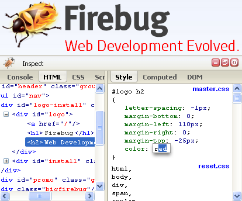

如果你最近 6 個月都沒碰過 Firefox 開發者工具，那真的該重新認識一下許多新功能了。先下載最新版的 Firefox 曙光版 (Aurora) 瀏覽器，再從「網頁開發者」選單 (在某些平台可能是位於「工具」之下的子選單) 中啟動所需工具即可。
Mozilla 提升了多項功能：「黑盒子 (Black-boxing)」功能可將原始碼當做系統函式庫，不再干擾你的除錯流程。經轉譯 (Transpiled) 或壓縮 (Minimized)過的原始碼，則可透過原始碼對照 (Source maps) 功能進行除錯。檢測器 (Inspector) 現具備新的字型窗格 ─ 閃爍繪圖區 (Paint flashing)。大幅強化的樣式檢測器 (Style Inspector) 現具備 Pseudo-elements 與自動補齊 (Tab completion) 功能。網路監測器 (Network Monitor) 可協助網路活動的除錯作業。另可參閱 Aurora 系列文章，以進一步了解最近開發的功能。
看過這些工具之後，就可啟動「應用程式管理員 (App Manager)」。而安裝 Firefox OS 模擬器 (Firefox OS Simulator) 將能了解 App 在裝置上的運作情形。如果你手上的 Firefox OS 裝置正執行最新 1.2 版，更能直接讓工具與手機連線。
內建工具的理由
Web 多虧有 Firebug 這個一直以來最好用的工具。Firebug 現具備 console API、DOM 視覺強化功能，並能即時編輯 (Inplace editing) 樣式。

Mozilla 在發表 Firefox 4 之前，就打定主意要讓 Firefox 內建一系列優質工具。這些工具讓我們能確實掌握現有的 Mozilla 社群並統合整個架構。在和 Gecko 與 Spidermonkey 開發者合作時，我們即透過 mozilla-central 骨幹而清楚劃分各個專案。Mozilla 早已規劃出積極的平台改善計畫：Firebug 賴以進行 Javascript 除錯的 JSD API 過於老舊，我們將藉由新的 Spidermonkey Debugger API 一併提升相關工具。
Mozilla 曾認真考慮要將 Firebug 整個內建於 Firefox 中。除了構思出許多整合方式之外，檢測器的早期原型也曾包含 Firebug 的主要部分。但最後發現整合過程困難重重，而且光是必須重寫的部份就等於要整個重頭來過。
Firebug 目前的狀態
Firebug 目前尚未穩定，且工作團隊仍持續不斷提升整個系統。相關資訊可參閱最新的 1.12 版。我們正努力將 Firebug 從 JSD 移植至新的 Debugger API，以期達到 Firefox 開發者工具的相同效能與穩定度。

在完成此階段之後呢？Firebug 專案負責人 Jan Odvarko 表示：
「雖然開發者工具均是使用標準程序的 Mozilla 內部專案，但 Firebug 一直被視為獨立於現有程序與 Firefox 環境之外的專案而進行開發。另外必須強調的是，Firebug 畢竟算是延伸功能，本來就是要讓 Firefox 的諸多功能更趨完備，而不是與既有功能相互競爭。因此我們將繼續打造 Firebug 成為特殊的獨立工具。」
針對 Firebug 的使用者、開發者、擴充套件作者等社群，所有人都想為他們找出最佳方向，以真正確立 Firefox 開發者工具的走向並使之更完善。Firebug 團隊正積極討論相關策略，但尚未決定最後的運作方式。
請隨時注意 Firebug blog 與 @firebugnews 以獲得相關資訊。
Firefox 開發者工具的下一步
我們不斷有熱心的員工加入開發過程。某些人負責開發新功能，包含效能分析與 WebGL 工具。而大多數的人將針對反饋意見而積極做出回應；開發者在搶先體驗工具之後的建議尤其重要。
Mozilla 歡迎你對這些工具貢獻一己之力。最近的 Ember.js Chrome Extension 就是在不過 1 天的時間內移植為 Firefox 開發者工具。我們知道還有更多絕妙的概念等著大家去完成。一如大多數的 Firefox 程式碼，Firebug 同樣能讓每個人找到適合自己的方式而加入開發。我們另正嘗試定義並發佈 Developer Tools API。Mozilla 將協助開發者建構高品質、高效能的開發工具擴充套件。若開發者針對 Firebug 或 Chrome Devtools 撰寫擴充套件，我們也衷心希望能聽取相關心得或建言。
只要持續留意相關文章，即可隨時掌握 Firefox 開發者工具的進展。你可加入dev-developer-tools 郵件群組、Twitter 的 @FirefoxDevTools，或irc.mozilla.org 的 #devtools 均可。
原文鏈結：https://hacks.mozilla.org/2013/10/firefox-developer-tools-and-firebug/